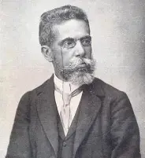

Machado de Assis
1839–1908 • Rio de Janeiro / Brasil
Joaquim Maria Machado de Assis foi um escritor, jornalista, cronista, dramaturgo e poeta brasileiro, nascido em 21 de junho de 1839, no Rio de Janeiro. De origem humilde, cresceu no Morro do Livramento e teve uma formação predominantemente autodidata, desenvolvendo desde cedo interesse pela literatura e pela atividade intelectual. Iniciou sua trajetória profissional como aprendiz de tipógrafo na Imprensa Nacional e, posteriormente, trabalhou em jornais, onde publicou poemas, crônicas e contos. Sua carreira literária começou sob influência do Romantismo, com romances como Ressurreição (1872), A Mão e a Luva (1874), Helena (1876) e Iaiá Garcia (1878). Entretanto, a publicação de Memórias Póstumas de Brás Cubas, em 1881, marcou uma transformação em sua produção e consolidou sua importância para o Realismo brasileiro. A partir dessa fase, passou a explorar com maior profundidade a psicologia humana, as contradições sociais e os interesses escondidos nas relações pessoais. Entre suas obras mais importantes estão Quincas Borba (1891), Dom Casmurro (1899), Esaú e Jacó (1904) e Memorial de Aires (1908). Também se destacou na produção de contos, crônicas e peças teatrais. Em 1897, participou da fundação da Academia Brasileira de Letras, tornando-se seu primeiro presidente. Faleceu em 29 de setembro de 1908, no Rio de Janeiro, deixando uma obra fundamental para a literatura brasileira.
Principais Obras
Temas Recorrentes
A complexidade da natureza humana, a hipocrisia social, a vaidade, o ciúme, a ambição, o egoísmo e as contradições das relações pessoais estão entre os principais temas de sua obra. Machado de Assis investigava os conflitos psicológicos de seus personagens, revelando como interesses individuais, inseguranças e desejos influenciam suas decisões. Também criticava as desigualdades sociais, o preconceito, a escravidão, a busca por prestígio e a influência do dinheiro na sociedade brasileira do século XIX. Outro tema frequente é a diferença entre aparência e realidade: muitas personagens procuram preservar uma imagem respeitável diante da sociedade, mesmo quando suas atitudes revelam comportamentos contraditórios. Em romances como Dom Casmurro, por exemplo, o autor explora o ciúme, a memória e a dificuldade de distinguir os acontecimentos reais das interpretações de quem os narra.
Características de Escrita
Sua escrita apresenta características marcantes do Realismo, especialmente a análise psicológica das personagens, a observação crítica da sociedade e o questionamento dos valores morais de sua época. Em vez de idealizar os indivíduos, Machado representava suas contradições, fraquezas, interesses e conflitos interiores. Utilizava frequentemente a ironia, a sátira e o humor para criticar comportamentos sociais e revelar a distância entre aquilo que as pessoas aparentam ser e suas verdadeiras motivações. Outra característica importante é a presença de narradores em primeira pessoa que apresentam os acontecimentos a partir de suas próprias perspectivas, o que exige do leitor uma interpretação crítica das informações narradas. Também recorria à conversa direta com o leitor, às reflexões filosóficas, às interrupções na narrativa e à quebra da sequência cronológica dos acontecimentos. Sua linguagem é cuidadosa, expressiva e marcada pela precisão, permitindo abordar questões profundas por meio de situações cotidianas. Essas características contribuíram para que sua produção ultrapassasse a simples descrição da realidade e investigasse os aspectos psicológicos e sociais da experiência humana.
Influências Artísticas
Sua formação literária foi marcada inicialmente pelo Romantismo brasileiro, movimento presente em seus primeiros romances, mas sua produção posterior desenvolveu uma perspectiva própria, associada ao Realismo. Machado de Assis também dialogou com importantes tradições da literatura europeia, especialmente com a ironia, a sátira e os recursos narrativos de autores como Laurence Sterne e William Shakespeare. A leitura de diferentes escritores e seu contato com a imprensa, o teatro e a crítica literária contribuíram para a construção de seu estilo. O contexto histórico e social do Brasil oitocentista também exerceu influência fundamental sobre suas obras: a sociedade escravocrata, as desigualdades, as relações de poder e as transformações políticas do período aparecem de maneira crítica em suas narrativas. Dessa forma, sua literatura estabeleceu relações entre a experiência brasileira e questões universais, como a identidade, a memória, o comportamento humano e os conflitos sociais.
"Ao vencedor, as batatas!"